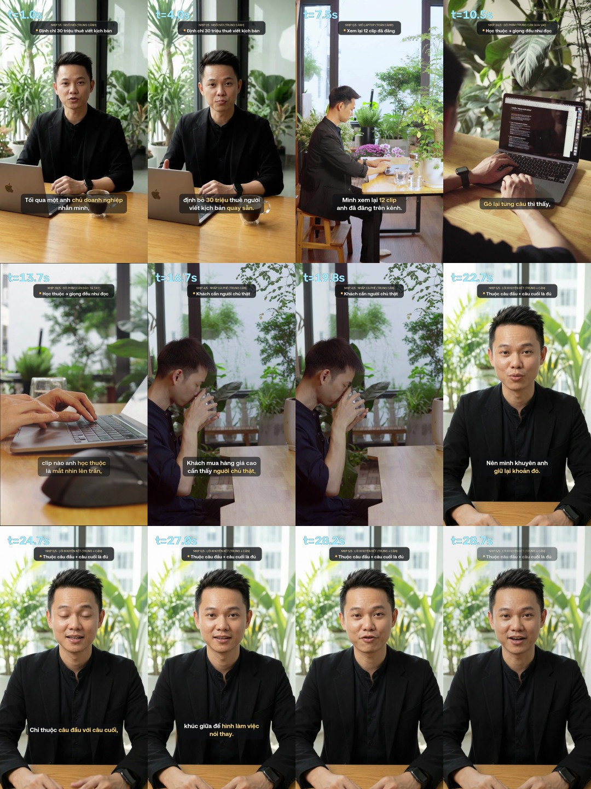

Thực Hành Quay 30 Giây Đầu Tiên Tại Lớp
Tổng hợp đề bài đầu tay nối tiếp ngay sau màn mở đầu: học viên trả lời 4 câu hỏi sự thật, chạy Mega Prompt V2 ra kịch bản 85–92 tiếng, chỉ thuộc 2 câu đầu – cuối nhìn ống kính và dùng chính 3 cảnh làm việc vừa xem để phủ trọn khúc giữa.
S1 Mở laptop (Toàn) → S4 Gõ phím (Qua vai) → S5 Nhấp cà phê (Trung cận, nghỉ 2 giây).
1. Vì Sao Chọn “Cơ Chế Lai” (4 Câu Hỏi Sự Thật + Khung 5 Nhịp Ẩn)?
Trong một lớp học thực tế có nhiều anh chị chủ tiệm, chủ xưởng, dược sĩ, kế toán ở độ tuổi 35–60 lần đầu đứng trước máy quay — lại có nhiều người làm chung một lĩnh vực ngồi cạnh nhau — đề bài đầu tiên phải tránh được cả hai cái bẫy quen thuộc:
| Khía cạnh thực tế | Nếu hỏi tự do không khung | Nếu phát văn mẫu điền từ | Cơ chế Lai áp dụng tại lớp |
|---|---|---|---|
| Tâm lý người mới cầm máy | Ngồi ngẩn trước câu hỏi rộng, không biết bắt đầu kể từ đâu. | Điền nhanh nhưng lúc mở miệng đọc lại ngượng vì không phải lời ăn tiếng nói hàng ngày của mình. | Chỉ hỏi 1 tình huống khách hỏi thật trong tuần; cho phép đọc bằng giọng nói hoặc ghi ra giấy. |
| Khi nhiều người cùng ngành ngồi chung bàn | Cấu trúc câu dài ngắn thất thường, không ghép vừa các cảnh chèn. | Bốn người cùng ngành sẽ ra 4 video có câu mở đầu giống hệt nhau. | Khung 5 nhịp giấu bên trong câu lệnh; bài nói khác biệt hoàn toàn nhờ con số thật và cách khuyên khách riêng. |
| Độ khớp với cảnh mở máy & nhấp cà phê | Lời nói dễ trôi sang chuyện chung chung, ghép cảnh gõ phím vào nhìn rời rạc. | Ngành nhà vườn hay cửa hàng dễ bị gượng nếu bắt đọc câu “Sáng nay tôi mở máy tính”. | Neo vào khoảnh khắc tra lại số liệu / phiếu kiểm tra trước khi khuyên thật cho khách. |
2. Bảng Neo Tự Nhiên Giữa Nghề Thật Và Cảnh Bàn Làm Việc (6 Cụm Ngành)
Không ngành nào phải nói câu sáo mòn “Sáng nay tôi mở máy” (vì hình ảnh cảnh S1 đã cho người xem thấy việc đó rồi). Thay vào đó, Câu 2 đi thẳng vào động từ kiểm tra + một tài liệu thật của nghề:
| Cụm ngành trong lớp | Thứ người làm nghề mở ra kiểm tra ở Câu 2 & Câu 3 (Khớp tự nhiên với cảnh Laptop · Gõ phím) |
|---|---|
| 1. Nhà vườn & Nông sản | Xem lại bảng dự báo nhiệt độ đợt gió mùa sắp về trước khi nhận đơn giao hoa đi xa; đối chiếu phiếu kiểm nghiệm mẻ ép tuần này. |
| 2. Bất động sản | Điền lại bảng tính dòng tiền cho thuê thực tế trừ phí vận hành; đặt cạnh nhau lịch thanh toán căn bàn giao sẵn và căn đóng theo đợt. |
| 3. Xưởng sản xuất & Tổng kho | Mở bản vẽ kích thước gỗ, bảng báo giá vật tư hoặc sổ bảo hành lô xe để chỉ ra chi tiết khách mua lần đầu rất hay nhầm. |
| 4. Dược · Chăm sóc sức khỏe · Thẩm mỹ | Xem lại ảnh chụp danh sách lọ thực phẩm bổ sung khách gửi (che tên khách) để khuyên bỏ bớt những món trùng hoạt chất gây tốn kém. |
| 5. Kế toán · Thuế · Nhân sự | Rà lại bảng kê hóa đơn đầu vào hoặc tờ khai quyết toán trước khi nhắc chủ doanh nghiệp một khoản phạt chậm nộp hay bị sót. |
| 6. Đào tạo nghề · Nghệ thuật · Tư vấn du học | Mở lại bài thực hành của học viên hoặc bảng kê tài chính hồ sơ du học rồi chỉ đúng một lỗi cần chỉnh ngay từ đầu. |
3. Bốn Câu Hỏi Sự Thật (3 Phút) & Khung Mega Prompt V2
3.1. Bốn câu hỏi học viên tự trả lời ngắn gọn trước khi tạo kịch bản
- Tuần này vị khách nào hỏi anh/chị câu gì khiến mình phải mở máy hoặc mở sổ ra xem lại mới trả lời chính xác được? (Ghi gần đúng lời khách hỏi).
- Anh/chị đã mở ra xem cái gì, và thấy con số hay chi tiết thực tế nào?
- Cuối cùng anh/chị khuyên khách thế nào để có lợi nhất cho họ — kể cả khi lời khuyên đó làm mình bán chậm lại hoặc khách mua ít đi?
- Ngoài đời anh/chị xưng là gì, gọi vị khách đó là gì? (Ví dụ: chị – em, mình – anh, tôi – bác).
3.2. Nguyên văn câu lệnh Mega Prompt V2 (Bấm nút để sao chép toàn bộ)
Đang tải nội dung câu lệnh...1. Đo đồng hồ 30 giây: Học viên đọc thông cả 5 câu với tốc độ nói chuyện bình thường + nghỉ 2 giây ở nhịp nhấp cà phê, đồng hồ báo trong khoảng 27–33 giây là vừa khít.
2. Tránh trùng đề cùng bàn: Nếu hai anh chị cùng ngành ngồi cạnh nhau vô tình chọn trùng một câu hỏi của khách (ví dụ cùng hỏi chuyện vay vốn), gợi ý một người đổi sang câu khách hay hỏi thứ hai trong sổ nghề để mỗi người ra một bài riêng biệt.
4. Ba Kịch Bản Mẫu Đã Qua Kiểm Định Độ Dài & Hơi Đọc
4.1. Mẫu 1 · Ngành Hoa & Nhà vườn — Chị Đ.T. (Sỉ Lan Hồ Điệp · 88 tiếng)
| Nhịp & Cỡ cảnh | Lời thoại (Xưng chị – em với chủ tiệm hoa trẻ) | Chữ trên màn hình | Cách quay tại lớp |
|---|---|---|---|
| 1 · NGỒI NÓI (MS) | Sáng nay một em chủ shop ngoài Hà Nội nhắn chị, đặt hai trăm cành hồ điệp giao gấp đầu tuần. (21) | Đặt gấp 200 cành hồ điệp | Thuộc câu 1 · Nhìn thẳng cam |
| 2 · MỞ MÁY (S1) | Chị ngồi xem lại dự báo nhiệt độ từng ngày ngoài Bắc. (12) | Xem lại nhiệt độ ngoài Bắc | Cầm giấy đọc · Phủ cảnh S1 |
| 3 · GÕ PHÍM (S4) | Đợt gió mùa tới tụt dưới mười lăm độ, lan đi đường xa rất dễ sốc lạnh rồi thui nụ. (20) | Dưới 15 độ dễ thui nụ | Cầm giấy đọc · Phủ cảnh S4 |
| 4 · CÀ PHÊ (S5) | Hoa biếu mà rụng nụ, là tiệm mất khách cả năm. (11 + nghỉ 2s nhấp cà phê) | Rụng nụ là mất khách | Đọc xong chừa 2s nâng ly |
| 5 · KẾT BÀI (MCU) | Nên chị khuyên em lùi lại bốn hôm chờ nắng ấm. Giao chậm một chút, nhưng cành nào tới tay khách cũng đủ nụ. (24) | Lùi 4 hôm cho đủ nụ | Thuộc câu 5 · Nhìn thẳng cam |
4.2. Mẫu 2 · Ngành Nông sản chế biến — Chị T.H. (Dầu Sachi ép lạnh · 86 tiếng)
| Nhịp & Cỡ cảnh | Lời thoại (Xưng mình – chị, không nói quá công dụng y tế) | Chữ trên màn hình | Cách quay tại lớp |
|---|---|---|---|
| 1 · NGỒI NÓI (MS) | Hôm qua một chị khách lớn tuổi nhắn mình: sao dầu Sachi bên em không thơm mùi rang như ngoài chợ? (22) | Sao dầu không thơm mùi rang? | Thuộc câu 1 · Nhìn thẳng cam |
| 2 · MỞ MÁY (S1) | Mình đối chiếu lại phiếu kiểm nghiệm của mẻ ép tuần này. (12) | Xem lại phiếu kiểm nghiệm | Cầm giấy đọc · Phủ cảnh S1 |
| 3 · GÕ PHÍM (S4) | Hạt rang lửa già trên trăm độ thì thơm, nhưng Omega ba mất đi nhiều. (17) | Trên 100 độ mất chất | Cầm giấy đọc · Phủ cảnh S4 |
| 4 · CÀ PHÊ (S5) | Chị uống sống mỗi sáng, mà gặp dầu rang già thì phí tiền. (13 + nghỉ 2s) | Dầu rang già thì phí tiền | Đọc xong chừa 2s nâng ly |
| 5 · KẾT BÀI (MCU) | Mình khuyên chị mua dầu Sachi để uống, đừng chọn theo mùi thơm. Lật chai xem chữ ép lạnh, ép nguội. (22) | Xem kỹ chữ ép lạnh | Thuộc câu 5 · Nhìn thẳng cam |
4.3. Mẫu 3 · Ngành Bất động sản — Chị B.H. (Bài toán dòng tiền cho thuê · 87 tiếng)
| Nhịp & Cỡ cảnh | Lời thoại (Bám sát con số thu – chi thực tế) | Chữ trên màn hình | Cách quay tại lớp |
|---|---|---|---|
| 1 · NGỒI NÓI (MS) | Đêm qua một anh khách ở Hà Nội nhắn mình, tính vay bảy mươi phần trăm mua căn Hạ Long cho thuê. (22) | Vay 70% mua căn cho thuê? | Thuộc câu 1 · Nhìn thẳng cam |
| 2 · MỞ MÁY (S1) | Mình điền lại bảng dòng tiền, đúng giá thuê đang chạy ở khu đó. (14) | Điền lại bảng dòng tiền | Cầm giấy đọc · Mở bảng tính |
| 3 · GÕ PHÍM (S4) | Tiền thuê trừ phí quản lý, chưa đủ trả gốc lẫn lãi khi hết hai năm ưu đãi. (18) | Tiền thuê chưa đủ trả lãi | Cầm giấy đọc · Phủ cảnh S4 |
| 4 · CÀ PHÊ (S5) | Cố mua lúc này, tháng nào anh cũng phải rút lương bù thêm. (13 + nghỉ 2s) | Tháng nào cũng rút lương bù | Đọc xong chừa 2s nâng ly |
| 5 · KẾT BÀI (MCU) | Mình khuyên anh khoan xuống cọc. Đợi vốn tự có quá nửa, hoặc chọn căn đang có khách thuê sẵn. (20) | Khoan cọc khi vốn dưới nửa | Thuộc câu 5 · Nhìn thẳng cam |
5. Bản Dựng Thử Nhịp Cắt 29 Giây (Minh Họa 6 Cú Cắt Toàn – Trung – Cận)
Để hình dung trực quan nhịp chuyển giữa 12 giây nhìn ống kính (đầu – cuối) và 17 giây cảnh làm việc phủ ở giữa (kèm 2,2 giây lặng nhấp cà phê), dưới đây là bản dựng thử nhịp (pre-viz) dài đúng 29,0 giây (89 tiếng):
Cấu trúc 6 cú cắt trong 29 giây:
00:00 – 00:06.1· Trung cảnh ngồi nói: “Tối qua một anh chủ doanh nghiệp nhắn mình, định bỏ ba mươi triệu thuê người viết kịch bản quay sẵn.”00:06.1 – 00:09.4· Toàn cảnh mở laptop: “Mình xem lại mười hai clip anh đã đăng trên kênh.”00:09.4 – 00:15.3· Qua vai → Cận tay gõ phím: “Gõ lại từng câu thì thấy, clip nào anh học thuộc là mắt nhìn lên trần, giọng đều như đọc.”00:15.3 – 00:21.5· Trung cận nhấp cà phê (+2,2s nghỉ lặng): “Khách mua hàng giá cao cần thấy người chủ thật, đâu cần diễn viên.”00:21.5 – 00:29.0· Trung cận kết bài: “Nên mình khuyên anh giữ lại khoản đó. Chỉ thuộc câu đầu với câu cuối, khúc giữa để hình làm việc nói thay.”
Ghi chú minh bạch: Hai đoạn ngồi nói đầu – cuối trong bản thử nhịp này được tạo mô phỏng trước giờ lên lớp để đo chính xác từng phần mười giây; khi ra thực địa tại Green Hub, chỉ mất 2 phút quay trực tiếp 2 câu đầu – cuối thật ngoài ban công để thay vào đúng khung cắt này.
